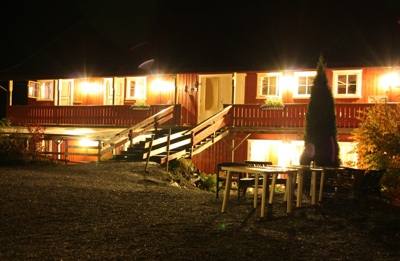

Innhold i PREP-kurset og bakgrunn for det.
NOE AV DET DU FÅR LÆRE:
-
Hva gjorde at dere ble et par, og hvordan finne tilbake til gnisten i forholdet ? Tilegne deg kunnskap om kjærlighetsspråkene du har.
-
Bli kjent med de forventninger og roller du bringer med deg inn i samlivet.
-
Gjenkjenne tankemønstre hos deg selv som fører til fastlåst kommunikasjon.
-
Være tydelig på jeg-budskap (”jeg føler at….” i stedet for ”det var du som…”)
-
Øke evnen til å være mer nøyaktig i kommunikasjonen for å minske misforståelser.
-
Teknikker for bedre kommunikasjon og problemløsning.
-
Utvikle en opplevelse av å være trygg i, og å mestre framtidige problemer i samlivet.
BAKGRUNN - HVA ER PREP?
PREP samlivskurs ble utviklet i USA. Kurset er et kommunikasjonskurs og passer både for par i starten av sitt samliv og for par som
har levd en stund og som kjenner hvor skoene trykker i eget samliv. Selv par i pensjonistalderen uttrykker stor glede over innholdet i kurset.
- "Dette skulle vi ha gjort før", er kommentarer vi ofte hører.
De engelske ordene bak forkortelsen er: Prevention and Relationship Enhancement Program. ”Forebyggende og relasjonsbyggende program som fremhever kvaliteter i forholdet”.
I USA var det forskere som ville gjøre seriøse studier av parforhold; forskningsprogram som bygget på fakta og ikke synsing. Man sammenlignet par som hadde gjennomgått PREP-kurset mot en kontrollgruppe som ikke hadde gjort det, og fulgte parene over en 20 års periode. Det viste seg ganske snart at par som fikk opplæring i PREP hadde en mye større trivsel i sitt forhold, kranglet på en mer konstruktiv måte og hadde en mye lavere skilsmisserate, enn par i kontrollgruppen som ikke gjennomgikk PREP-programmet.
Det forskerne blant annet spurte etter var; Hvilke egenskaper hos paret kan bedres for at det skal klare å møte konflikter og uenigheter i samlivet. Om de to var ”like” eller ”ulike” i personlighet eller kulturell bakgrunn, hadde mindre å si. Det viste seg å være evnen til å håndtere konflikter og måten å kommunisere på som var det avgjørende. Dette var oppløftende for disse tingene kan en gjøre noe med i et parforhold.
TYSK FORSKNING UNDERBYGGER RESULTATENE
Forskning fra Tyskland viste at par som hadde gått på et helge-samlivskurs hadde halvert skilsmisseprosenten 11 år etter helgekurset i forhold til par som ikke hadde gått på kurs. Av de parene som hadde gått på samlivskurs, var 28% skilt 11 år etter, mens i kontrollgruppa som ikke hadde gått på kurs var tallet 56 %. Altså dobbelt så mange!
Disse opplysningene syntes forskerne var for fantastiske til at de kunne være rikige, så de satte igang med ny undersøkelse med nye par. 11 år etter dette, viste tallet for skilte par som hadde gått på samlivskurs en helg - kun 20 % ! Altså en ytterligere nedgang i brudd. Et samlivskurs kan gjøre en forskjell.

LITT FRA INNHOLDET: DE FIRE FARESIGNALENE.
Hos de fleste par viste det seg at det var et begrenset antall kjennetegn som gikk igjen. Ubearbeidet vil de ofte førte til et dårlig forhold. - ”Det finnes tusen måter å bli lykkelig på, men bare en håndfull måter å mislykkes på”, formulerte forskerne seg, og oppsummerer de slik:
-
Opptrapping - det ene ordet tar det andre, og snart sier en ting til hverandre som ikke har noe med saken å gjøre, og som vi kanskje heller ikke egentlig mener, og som vi derfor ikke ville ha sagt i en annen sammenheng
-
Nedvurdering - av den andre med ord og uttrykk som er sårende (f.eks "du er alltid" og "du gjør jo aldri"...). En kaller hverandre ting som en egentlig ikke mener
-
Negativ fortolkning -misforståelser. Jeg hører noe annet enn den andre sier, og så blir alt galt
-
Tilbaketrekning - den ene trekker seg tilbake i taushet der den andre vil prate personlig om følelser. Man unngår samtaler om følelser.
Det som gav forskerne mot, var at disse
problemene rundt kommunikasjon og konflikthåndtering er av en slik art at man
kan forandre på dem ved å trene på ferdigheter, - blant annet benytte
”tale-lytte-teknikk” - som parene øver på når de er på PREP-kurs.
KURSMODELL
Alle PREP-kurs i landet har en felles mal som
PREP-instruktører følger. Likevel kan kursene oppleves svært forskjellige fordi foredragsholderne kan krydre med egne historier, rollespill mm. Et kurs over tre dager gir i tillegg mer tid til temaene enn kurs over èn eller to dager.
Hver økt starter med en kort innledning /teori-presentasjon
etterfulgt av rollespill som instruktørene har, eller video, dikt, musikk/sang
ol.
Det er mye humor og mange pedagogiske vekslinger mellom musikk, lyrikk, tegninger, video, rollespill som foredragsholderne har. Det er ikke lange foredrag. Likevel blir dagene lange og intense. Det er mange interesante teamer vi skal innom.
I tillegg er det ved hvert kurs en rekke dyktige veiledere som har fått opplæring i ”tale-lytte-teknikken” og har erfaring i å veilede i den. De vil gå mellom parene i salen og hjelpe hvert par i gang med øvelsene, slik at dere kan lære mest mulig i løpet av helgen. Denne teknikken brukes på flere av temaene. Veilederne har ikke anledning til å gå inn i noen terapisituasjon, men er her kun for å hjelpe parene i gang med øvelsene. PREP-kurs er HJELP TIL SELVHJELP.
Kurset har ikke gruppearbeid ! En utleverer seg altså ikke til andre.
